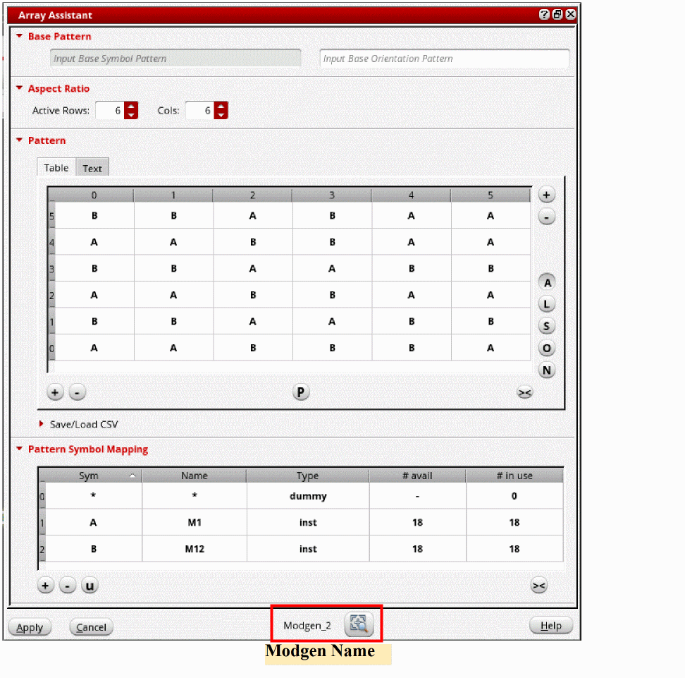
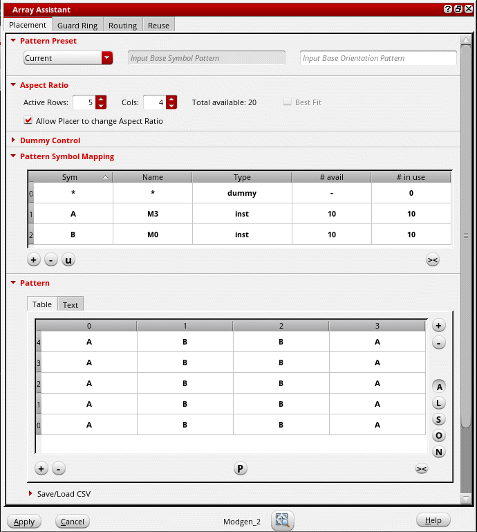

2
Automatic Generation of Modgens using the Array Assistant
The Modgen Array Assistant is a modeless, dockable assistant that facilitates the visualization and editing of Modgen device arrays in an abstracted manner. It is a unified interface that allows you to quickly create and edit Modgen device arrays through its use model, which batches edits together before applying them to the layout canvas.
When you select a Modgen in the layout design, its settings are automatically loaded in the Array Assistant. The name of the Modgen is displayed at the bottom of the Array Assistant.
On closing and re-opening the Array Assistant, settings of the last viewed Modgen are automatically loaded.
When launched from Layout XL, the Array Assistant checks out two Virtuoso Layout Suite GXL tokens (95321). When launched from higher tiers, no additional licenses are required.
-
In Layout XL, the Array Assistant lets you specify the Modgen placement settings.
 -
In Layout EXL and higher tiers, the Array Assistant lets you specify the Modgen placement settings, the guard ring options, the topology and routing settings, and the reuse options.
The options in the assistant are organized in four tabs that let you perform the following tasks:- Define Modgen Placement Settings: Use the Placement tab of the Array Assistant to specify the Modgen pattern settings.
- Create Guard Rings: Use the Guard Ring tab of the Array Assistant to create guard rings around the Modgens.
-
Define Modgen Topology Settings: Use the Routing tab of the Array Assistant to define Modgen topology patterns and set routing preferences.
The Routing tab is available only when the Array Assistant is launched from the Constraint Manager assistant. In the Virtuoso automated device placement and routing flow, the tree router is used for routing. Therefore, the Routing tab is not available when the Array Assistant is launched from the Auto P&R assistant. - Reuse Modgen Templates: Use the Reuse tab of the Array Assistant to load and save settings to Modgen template files.
Select the instances that you want to include in the Modgen and use the options in the Array Assistant to generate a placed and routed Modgen.
You can directly access the Array Assistant from the layout canvas without opening the Modgen Editor. The Array Assistant is accessible from both the Constraint Manager assistant and the Auto P&R assistant (Layout EXL and Higher Tiers).
Related Topics
Opening Array Assistant From the Constraint Manager
Opening Array Assistant During Device Placement
Opening the Array Assistant During Interactive Placement
Return to top